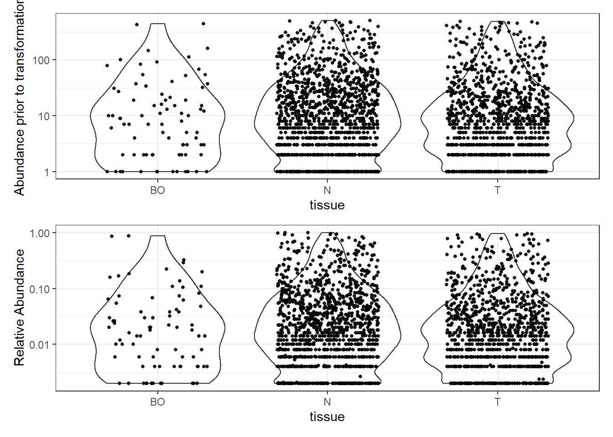

NCI-UMD: Data Processing, Checking, and Exploration
Last updated: 2020-12-01
Checks: 6 1
Knit directory: esoph-micro-cancer-workflow/
This reproducible R Markdown analysis was created with workflowr (version 1.6.2). The Checks tab describes the reproducibility checks that were applied when the results were created. The Past versions tab lists the development history.
The R Markdown file has unstaged changes. To know which version of the R Markdown file created these results, you’ll want to first commit it to the Git repo. If you’re still working on the analysis, you can ignore this warning. When you’re finished, you can run wflow_publish to commit the R Markdown file and build the HTML.
Great job! The global environment was empty. Objects defined in the global environment can affect the analysis in your R Markdown file in unknown ways. For reproduciblity it’s best to always run the code in an empty environment.
The command set.seed(20200916) was run prior to running the code in the R Markdown file. Setting a seed ensures that any results that rely on randomness, e.g. subsampling or permutations, are reproducible.
Great job! Recording the operating system, R version, and package versions is critical for reproducibility.
Nice! There were no cached chunks for this analysis, so you can be confident that you successfully produced the results during this run.
Great job! Using relative paths to the files within your workflowr project makes it easier to run your code on other machines.
Great! You are using Git for version control. Tracking code development and connecting the code version to the results is critical for reproducibility.
The results in this page were generated with repository version 9937a7e. See the Past versions tab to see a history of the changes made to the R Markdown and HTML files.
Note that you need to be careful to ensure that all relevant files for the analysis have been committed to Git prior to generating the results (you can use wflow_publish or wflow_git_commit). workflowr only checks the R Markdown file, but you know if there are other scripts or data files that it depends on. Below is the status of the Git repository when the results were generated:
Ignored files:
Ignored: .Rhistory
Ignored: .Rproj.user/
Ignored: data/
Unstaged changes:
Modified: analysis/data_processing_nci_umd.Rmd
Modified: code/get_cleaned_data.R
Note that any generated files, e.g. HTML, png, CSS, etc., are not included in this status report because it is ok for generated content to have uncommitted changes.
These are the previous versions of the repository in which changes were made to the R Markdown (analysis/data_processing_nci_umd.Rmd) and HTML (docs/data_processing_nci_umd.html) files. If you’ve configured a remote Git repository (see ?wflow_git_remote), click on the hyperlinks in the table below to view the files as they were in that past version.
| File | Version | Author | Date | Message |
|---|---|---|---|---|
| Rmd | e41080d | noah-padgett | 2020-10-22 | updated cleaning and ids data |
| html | e41080d | noah-padgett | 2020-10-22 | updated cleaning and ids data |
| Rmd | 5b186b4 | noah-padgett | 2020-10-08 | fixed image showing |
| html | 5b186b4 | noah-padgett | 2020-10-08 | fixed image showing |
| html | aaf0192 | noah-padgett | 2020-09-24 | Build site. |
| Rmd | 498a050 | noah-padgett | 2020-09-24 | updated data processing |
| html | 498a050 | noah-padgett | 2020-09-24 | updated data processing |
| Rmd | ec3d151 | noah-padgett | 2020-09-24 | updated processing files |
| Rmd | 0159b72 | noah-padgett | 2020-09-23 | initial commit |
| html | 0159b72 | noah-padgett | 2020-09-23 | initial commit |
Make table of sequencial cut-offs where we removed OTUs
This page contains the investigation of the raw data (OTUs) to identify if outliers are present or whether other issues emerge that may influence our results in unexpected ways. This file goes through the following checks:
- Removal of Phylum NA features
- Computation of total and average prevalence in each Phylum
- Removal Phyla with 1% or less of all samples
- Computation of total read count for each Phyla
- Plotting taxa prevalence vs total counts - identify a natural threshold if clear, if not use 5%
- Merging taxa to genus rank/level
- Abundance Value Transformations
- Plotting of abundance values by “Intervention A or B” before transformation and after
- Checking of any bimodal distributions using “subset_taxa” function and plot by “intervention”
Taxonomic Filtering
0. Sample Reads, Totals, and Rarifying
sampleReads <- phyloseq::sample_sums(phylo.data.nci.umd)
# Total quality Reads
sum(sampleReads)[1] 79000# Average reads
mean(sampleReads)[1] 500# max sequencing depth
max(sampleReads)[1] 500# rarified to an even depth of
phylo.data.nci.umd <- phyloseq::rarefy_even_depth(phylo.data.nci.umd, replace = T, rngseed = 20200923)`set.seed(20200923)` was used to initialize repeatable random subsampling.Please record this for your records so others can reproduce.Try `set.seed(20200923); .Random.seed` for the full vector...25OTUs were removed because they are no longer
present in any sample after random subsampling...# even depth of:
phyloseq::sample_sums(phylo.data.nci.umd) 1.S37.Jun172016 100.D06.S42.Jul202017 102.S57.Jun172016
500 500 500
103.S58.Jun172016 104.S23.Jun172016 106.E02.S50.Jun232016
500 500 500
108.E06.S54.Jul202017 109.S70.Jun172016 11.B08.S20.Jun232016
500 500 500
110.S69.Jun172016 112.F02.S62.Jun232016 113.F01.S61.Jun232016
500 500 500
114.S41.Jun172016 118.S82.Jun172016 119.G01.S73.Jun232016
500 500 500
121.G05.S77.Jul202017 124.S93.Jun172016 125.H06.S90.Jul202017
500 500 500
127.S6.Jun172016 128.S5.Jun172016 129.A01.S1.Jul202017
500 500 500
13.S20.Jun172016 130.A02.S2.Jul202017 131.S62.Jun172016
500 500 500
134.F11.S71.Jun172016 135.B06.S18.Jun232016 137.F09.S69.Jul202017
500 500 500
139.F07.S67.Jun232016 140.B02.S14.Jul202017 142.E08.S56.Jul202017
500 500 500
143.G08.S80.Jul202017 145.D09.S45.Jul202017 146.S29.Jun172016
500 500 500
148.S30.Jun172016 149.C05.S29.Jun232016 150.C06.S30.Jun232016
500 500 500
151.E03.S51.Jun232016 152.H07.S91.Jun232016 154.C02.S26.Jul202017
500 500 500
155.C09.S33.Jul202017 156.S42.Jun172016 157.D05.S41.Jun232016
500 500 500
158.D06.S42.Jun232016 159.B10.S22.Jul202017 16.S38.Jun172016
500 500 500
160.E04.S52.Jun232016 162.G04.S76.Jun232016 165.S54.Jun172016
500 500 500
166.E06.S54.Jun232016 167.E05.S53.Jun232016 168.S59.Jun172016
500 500 500
17.S14.Jun172016 170.E02.S50.Jul202017 172.S65.Jun172016
500 500 500
173.S66.Jun172016 174.S76.Jun172016 175.S88.Jun172016
500 500 500
176.H07.S91.Jul202017 178.F02.S62.Jul202017 179.F01.S61.Jul202017
500 500 500
18.S35.Jun172016 181.D02.S38.Jul202017 184.S61.Jun172016
500 500 500
185.G08.S80.Jun232016 186.S77.Jun172016 187.S78.Jun172016
500 500 500
188.G06.S78.Jun232016 189.G05.S77.Jun232016 19.S25.Jun172016
500 500 500
190.G01.S73.Jul202017 191.G02.S74.Jul202017 194.H05.S89.Jun232016
500 500 500
195.H06.S90.Jun232016 196.D08.S44.Jun232016 197.G07.S79.Jul202017
500 500 500
198.F03.S63.Jun232016 199.A11.S11.Jun232016 2.S16.Jun172016
500 500 500
20.A09.S9.Jun232016 200.S96.Jun172016 201.H02.S86.Jun242016
500 500 500
202.D07.S43.Jul202017 204.S1.Jun172016 205.S2.Jun172016
500 500 500
206.S51.Jun172016 208.D03.S39.Jun232016 211.A07.S7.Jun232016
500 500 500
212.A08.S8.Jun232016 22.C07.S31.Jun232016 226.S50.Jun172016
500 500 500
227.S74.Jun172016 229.S79.Jun172016 23.S75.Jun172016
500 500 500
233.G07.S79.Jun232016 234.C07.S31.Jul202017 239.D09.S45.Jun232016
500 500 500
24.S92.Jun172016 25.C03.S27.Jul202017 26.H04.S88.Jun232016
500 500 500
27.F09.S69.Jun232016 28.S87.Jun172016 29.S31.Jun172016
500 500 500
31.C08.S32.Jun232016 32.S52.Jun172016 33.F03.S63.Jul202017
500 500 500
34.C10.S34.Jun232016 35.A03.S3.Jul202017 36.F04.S64.Jul202017
500 500 500
37.S32.Jun172016 38.C09.S33.Jun232016 4.S13.Jun172016
500 500 500
42.A04.S4.Jul202017 43.S49.Jun172016 46.C04.S28.Jul202017
500 500 500
47.S44.Jun172016 48.S43.Jun172016 49.S47.Jun172016
500 500 500
5.S4.Jun172016 50.S56.Jun172016 51.S55.Jun172016
500 500 500
52.E10.S58.Jun232016 53.E09.S57.Jun232016 54.G11.S83.Jul202017
500 500 500
55.E03.S51.Jul202017 57.S68.Jun172016 58.S67.Jun172016
500 500 500
59.S72.Jun172016 6.A10.S10.Jun232016 60.C10.S34.Jul202017
500 500 500
61.G09.S81.Jun232016 62.G10.S82.Jun232016 63.D03.S39.Jul202017
500 500 500
66.G04.S76.Jul202017 67.D10.S46.Jul202017 68.S91.Jun172016
500 500 500
7.A08.S8.Jul202017 70.H09.S93.Jun232016 71.H10.S94.Jun232016
500 500 500
73.H04.S88.Jul202017 74.H03.S87.Jul202017 77.S10.Jun172016
500 500 500
79.S3.Jun172016 8.S8.Jun172016 80.A01.S1.Jun232016
500 500 500
81.A02.S2.Jun232016 82.A05.S5.Jul202017 83.A06.S6.Jul202017
500 500 500
84.S22.Jun172016 86.B02.S14.Jun232016 87.B01.S13.Jun232016
500 500 500
88.B05.S17.Jul202017 89.B06.S18.Jul202017 90.S33.Jun172016
500 500 500
95.C06.S30.Jul202017 96.S46.Jun172016 97.S45.Jun172016
500 500 500
98.D02.S38.Jun232016 99.D01.S37.Jun232016
500 500 1. Removal of Phylum NA features
# show ranks
phyloseq::rank_names(phylo.data.nci.umd)[1] "Kingdom" "Phylum" "Class" "Order" "Family" "Genus" # table of features for each phylum
table(phyloseq::tax_table(phylo.data.nci.umd)[,"Phylum"], exclude=NULL)
p__Acidobacteria p__Actinobacteria p__Bacteroidetes
2 110 89
p__Chloroflexi p__DeinococcusThermus p__Firmicutes
2 7 242
p__Fusobacteria p__Planctomycetes p__Proteobacteria
23 2 287
p__Spirochaetes p__Synergistetes p__Tenericutes
4 2 2
p__TM7 p__unassigned p__Verrucomicrobia
3 3 3 Note that no taxa were labels as NA so none were removed.
2. Computation of total and average prevalence in each Phylum
# compute prevalence of each feature
prevdf <- apply(X=phyloseq::otu_table(phylo.data.nci.umd),
MARGIN= ifelse(phyloseq::taxa_are_rows(phylo.data.nci.umd), yes=1, no=2),
FUN=function(x){sum(x>0)})
# store as data.frame with labels
prevdf <- data.frame(Prevalence=prevdf,
TotalAbundance=phyloseq::taxa_sums(phylo.data.nci.umd),
phyloseq::tax_table(phylo.data.nci.umd))Compute the totals and averages abundances.
totals <- plyr::ddply(prevdf, "Phylum",
function(df1){
A <- cbind(mean(df1$Prevalence), sum(df1$Prevalence))
colnames(A) <- c("Average", "Total")
A
}
) # end
totals Phylum Average Total
1 p__Acidobacteria 1.000000 2
2 p__Actinobacteria 4.190909 461
3 p__Bacteroidetes 6.292135 560
4 p__Chloroflexi 1.500000 3
5 p__DeinococcusThermus 1.000000 7
6 p__Firmicutes 8.834711 2138
7 p__Fusobacteria 8.260870 190
8 p__Planctomycetes 1.000000 2
9 p__Proteobacteria 3.811847 1094
10 p__Spirochaetes 2.750000 11
11 p__Synergistetes 2.500000 5
12 p__Tenericutes 2.000000 4
13 p__TM7 10.333333 31
14 p__unassigned 1.000000 3
15 p__Verrucomicrobia 1.000000 3Any of the taxa under a total of 100 may be suspect. First, we will remove the taxa that are clearly too low in abundance (<=3).
filterPhyla <- totals$Phylum[totals$Total <= 3, drop=T] # drop allows some of the attributes to be removed
phylo.data1 <- phyloseq::subset_taxa(phylo.data.nci.umd, !Phylum %in% filterPhyla)
phylo.data1phyloseq-class experiment-level object
otu_table() OTU Table: [ 769 taxa and 158 samples ]
sample_data() Sample Data: [ 158 samples by 78 sample variables ]
tax_table() Taxonomy Table: [ 769 taxa by 6 taxonomic ranks ]
phy_tree() Phylogenetic Tree: [ 769 tips and 767 internal nodes ]Next, we explore the taxa in more detail next as we move to remove some of these low abundance taxa.
3. Removal Phyla with 0.1% or less of all samples (prevalence filtering)
prevdf1 <- subset(prevdf, Phylum %in% phyloseq::get_taxa_unique(phylo.data1, "Phylum"))4. Total count computation
# already done above ()5. Threshold identification
ggplot(prevdf1, aes(TotalAbundance+1,
Prevalence/nsamples(phylo.data.nci.umd))) +
geom_hline(yintercept=0.01, alpha=0.5, linetype=2)+
geom_point(size=2, alpha=0.75) +
scale_x_log10()+
labs(x="Total Abundance", y="Prevalance [Frac. Samples]")+
facet_wrap(.~Phylum) + theme(legend.position = "none")
Note: for plotting purposes, a \(+1\) was added to all TotalAbundances to avoid a taking the log of 0.
Next, we define a prevalence threshold, that way the taxa can be pruned to a prespecified level. In this study, we used 0.001 (0.1%) of total samples.
prevalenceThreshold <- 0.001*(phyloseq::nsamples(phylo.data.nci.umd))
prevalenceThreshold[1] 0.158# execute the filtering to this level
keepTaxa <- rownames(prevdf1)[(prevdf1$Prevalence >= prevalenceThreshold)]
phylo.data2 <- phyloseq::prune_taxa(keepTaxa, phylo.data1)6. Merge taxa (to genus level)
genusNames <- phyloseq::get_taxa_unique(phylo.data2, "Genus")
#phylo.data3 <- merge_taxa(phylo.data2, genusNames, genusNames[which.max(taxa_sums(phylo.data2)[genusNames])])
# How many genera would be present after filtering?
length(phyloseq::get_taxa_unique(phylo.data2, taxonomic.rank = "Genus"))[1] 234phylo.data3 = phyloseq::tax_glom(phylo.data2, "Genus", NArm = TRUE)7. Removal of Genera Contaminants
a <- taxa_names(phylo.data3)
conTaxa <- c("Ralstonia", "Delftia", "Agrobacterium", "Janthinobacterium", "Halomonas", "Methylobacterium", "Aquamicrobium", "Diaphorobacter", "Herbaspirillum", "Variovorax")
i <- 1
K <- 0
for(i in 1:length(conTaxa)){
kT <- a[a %like% conTaxa[i]]
K <- c(K, kT)
}
b <- !a %in% K
phylo.data3 <- phyloseq::prune_taxa(b, phylo.data3)8. Relative Adbundance Plot
plot_abundance = function(physeq, title = "", ylab="Abundance"){
mphyseq = phyloseq::psmelt(physeq)
mphyseq <- subset(mphyseq, Abundance > 0)
ggplot(data = mphyseq, aes(x=tissue, y=Abundance)) +
geom_violin(fill = NA) +
geom_point(size = 1, alpha = 0.9,
position = position_jitter(width = 0.3)) +
scale_y_log10()+
labs(y=ylab)+
theme(legend.position="none")
}
# Transform to relative abundance. Save as new object.
phylo.data3ra = transform_sample_counts(phylo.data3, function(x){x / sum(x)})
plotBefore = plot_abundance(phylo.data3, ylab="Abundance prior to transformation")
plotAfter = plot_abundance(phylo.data3ra, ylab="Relative Abundance")
# Combine each plot into one graphic.
plotBefore + plotAfter + plot_layout(nrow=2)
9. Plotting Abundance
Abundance by Phylum
plot_abundance = function(physeq, title = "", Facet = "Phylum", ylab="Abundance"){
mphyseq <- phyloseq::psmelt(physeq)
mphyseq <- subset(mphyseq, Abundance > 0)
ggplot(data = mphyseq, aes(x=tissue, y=Abundance)) +
geom_violin(fill = NA) +
geom_point(size = 1, alpha = 0.9,
position = position_jitter(width = 0.3)) +
facet_wrap(facets = Facet) + scale_y_log10()+
labs(y=ylab)+
theme(legend.position="none")
}
plotBefore = plot_abundance(phylo.data3,
ylab="Abundance prior to transformation")
plotAfter = plot_abundance(phylo.data3ra,
ylab="Relative Abundance")
plotBefore + plotAfter + plot_layout(nrow=2)Warning in max(data$density): no non-missing arguments to max; returning -InfWarning: Computation failed in `stat_ydensity()`:
replacement has 1 row, data has 0Warning in max(data$density): no non-missing arguments to max; returning -InfWarning: Computation failed in `stat_ydensity()`:
replacement has 1 row, data has 0Phylum: Fusobacteria
plot_abundance = function(physeq, title = "", Facet = "Genus", ylab="Abundance"){
mphyseq = phyloseq::subset_taxa(physeq, Phylum %in% "p__Fusobacteria")
mphyseq <- phyloseq::psmelt(mphyseq)
mphyseq <- subset(mphyseq, Abundance > 0)
ggplot(data = mphyseq, aes(x=tissue, y=Abundance)) +
geom_violin(fill = NA) +
geom_point(size = 1, alpha = 0.9,
position = position_jitter(width = 0.3)) +
facet_wrap(facets = Facet) + scale_y_log10()+
labs(y=ylab)+
theme(legend.position="none")
}
plotBefore = plot_abundance(phylo.data3,
ylab="Abundance prior to transformation")
plotAfter = plot_abundance(phylo.data3ra,
ylab="Relative Abundance")
plotBefore + plotAfter + plot_layout(nrow=2)Warning in max(data$density): no non-missing arguments to max; returning -InfWarning: Computation failed in `stat_ydensity()`:
replacement has 1 row, data has 0Warning in max(data$density): no non-missing arguments to max; returning -InfWarning: Computation failed in `stat_ydensity()`:
replacement has 1 row, data has 0
sessionInfo()R version 4.0.2 (2020-06-22)
Platform: x86_64-w64-mingw32/x64 (64-bit)
Running under: Windows 10 x64 (build 18363)
Matrix products: default
locale:
[1] LC_COLLATE=English_United States.1252
[2] LC_CTYPE=English_United States.1252
[3] LC_MONETARY=English_United States.1252
[4] LC_NUMERIC=C
[5] LC_TIME=English_United States.1252
attached base packages:
[1] stats graphics grDevices utils datasets methods base
other attached packages:
[1] car_3.0-8 carData_3.0-4 gvlma_1.0.0.3 patchwork_1.0.1
[5] viridis_0.5.1 viridisLite_0.3.0 gridExtra_2.3 xtable_1.8-4
[9] kableExtra_1.1.0 plyr_1.8.6 data.table_1.13.0 readxl_1.3.1
[13] forcats_0.5.0 stringr_1.4.0 dplyr_1.0.1 purrr_0.3.4
[17] readr_1.3.1 tidyr_1.1.1 tibble_3.0.3 ggplot2_3.3.2
[21] tidyverse_1.3.0 lmerTest_3.1-2 lme4_1.1-23 Matrix_1.2-18
[25] vegan_2.5-6 lattice_0.20-41 permute_0.9-5 phyloseq_1.32.0
[29] workflowr_1.6.2
loaded via a namespace (and not attached):
[1] minqa_1.2.4 colorspace_1.4-1 rio_0.5.16
[4] ellipsis_0.3.1 rprojroot_1.3-2 XVector_0.28.0
[7] fs_1.5.0 rstudioapi_0.11 farver_2.0.3
[10] fansi_0.4.1 lubridate_1.7.9 xml2_1.3.2
[13] codetools_0.2-16 splines_4.0.2 knitr_1.29
[16] ade4_1.7-15 jsonlite_1.7.0 nloptr_1.2.2.2
[19] broom_0.7.0 cluster_2.1.0 dbplyr_1.4.4
[22] BiocManager_1.30.10 compiler_4.0.2 httr_1.4.2
[25] backports_1.1.7 assertthat_0.2.1 cli_2.0.2
[28] later_1.1.0.1 htmltools_0.5.0 tools_4.0.2
[31] igraph_1.2.5 gtable_0.3.0 glue_1.4.1
[34] reshape2_1.4.4 Rcpp_1.0.5 Biobase_2.48.0
[37] cellranger_1.1.0 vctrs_0.3.2 Biostrings_2.56.0
[40] multtest_2.44.0 ape_5.4 nlme_3.1-148
[43] iterators_1.0.12 xfun_0.19 openxlsx_4.1.5
[46] rvest_0.3.6 lifecycle_0.2.0 statmod_1.4.34
[49] zlibbioc_1.34.0 MASS_7.3-51.6 scales_1.1.1
[52] hms_0.5.3 promises_1.1.1 parallel_4.0.2
[55] biomformat_1.16.0 rhdf5_2.32.2 curl_4.3
[58] yaml_2.2.1 stringi_1.4.6 S4Vectors_0.26.1
[61] foreach_1.5.0 BiocGenerics_0.34.0 zip_2.0.4
[64] boot_1.3-25 rlang_0.4.7 pkgconfig_2.0.3
[67] evaluate_0.14 Rhdf5lib_1.10.1 labeling_0.3
[70] tidyselect_1.1.0 magrittr_1.5 R6_2.4.1
[73] IRanges_2.22.2 generics_0.0.2 DBI_1.1.0
[76] foreign_0.8-80 pillar_1.4.6 haven_2.3.1
[79] whisker_0.4 withr_2.2.0 mgcv_1.8-31
[82] abind_1.4-5 survival_3.2-3 modelr_0.1.8
[85] crayon_1.3.4 rmarkdown_2.5 grid_4.0.2
[88] blob_1.2.1 git2r_0.27.1 reprex_0.3.0
[91] digest_0.6.25 webshot_0.5.2 httpuv_1.5.4
[94] numDeriv_2016.8-1.1 stats4_4.0.2 munsell_0.5.0